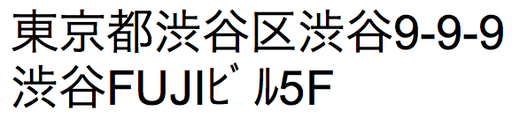
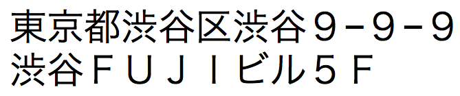
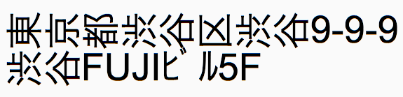
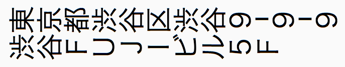
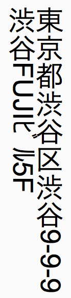
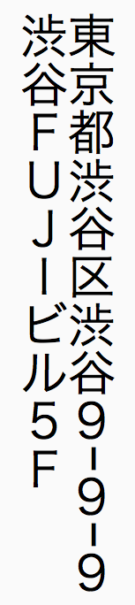

提示 可以通过单击状态工具栏中的"文本工具  "并选择"编辑"菜单 >"全选"，选择布局中的所有文本对象。
"并选择"编辑"菜单 >"全选"，选择布局中的所有文本对象。
如果操作系统配置为支持日语文本输入，则可以对以垂直书写格式显示日语文本的字段对象和文本对象设置格式。在垂直书写中，会从上到下显示和阅读字符，且连续的几列将从右到左垂直显示。
在布局中设置垂直文本的格式有两种方法。所选的格式通常取决于布局的页面方向。对于每个文本对象或字段，您可以：
•只旋转字符，不旋转字段或文本对象。在这种情况下，每个字符按逆时针方向旋转 90 度，但字符仍从左到右显示，列保持为水平显示。
•同时旋转字符和字段或文本对象。在这种情况下，每个字符按逆时针方向旋转 90 度，文本对象或字段对象按顺时针旋转 90 度，因此字符在屏幕中以垂直格式显示，字符以垂直列形式从上到下显示出来。
注释 在指定"竖式书写"时，半角字母和数字 (hankaku) 字符不旋转，但全角字母和数字 (zenkaku) 字符进行旋转。例如，当包含半角数字的街道号码的地址字段被指定为"竖式书写"时，半角数字仍以其原方向显示。可以使用函数将半角字母或数字字符转换为全角字符或中文数字。有关更多信息，请参阅下面的"注释"部分。
下表显示了可用的格式选项：
原日语文本 | 只旋转字符 | 同时旋转字符和对象 | |
半角：  全角：  | 半角：  全角：  | 半角：  | 全角：  |
1. 在布局模式下，选择要设置为垂直显示的字段和文本对象。
提示 可以通过单击状态工具栏中的"文本工具 "并选择"编辑"菜单 >"全选"，选择布局中的所有文本对象。
2. 要将字符按逆时针方向旋转 90 度，请选择"格式"菜单 >"方向">"竖式书写"。
所有文本（全角字母和数字字符除外）都按旋转后的方式显示。
3. 要旋转选定字段对象和文本对象，以便文本列垂直显示，请选择"排列"菜单 >"旋转"。
•根据您要打印的布局，可以更改布局的页面方向。为此，请选择"文件"菜单 >"打印设置"(Windows) 或"页面设置"(macOS)，然后将页面方向更改为"纵向"或"横向"。
在预览模式下，也可以单击状态工具栏中的"打印设置"(Windows) 或"页面设置"(macOS)。
•如果在浏览模式下选择已旋转字段中的文本，或在布局模式下已旋转文本对象中的文本，则在编辑文本时，文本临时以未旋转的方式显示。
•如有必要，还可以旋转图片以匹配垂直文本。有关更多信息，请参阅排列对象。
•没有必要重新输入数据，您可以使用函数将半角字母和数字字符转换为全角字符或中文数字。要使用函数转换字符，请定义包含相应函数的新计算字段，然后将该字段放在布局中。有以下函数可用。有关更多信息，请参阅文本函数。
字段类型 | 函数 | 转换类型 |
文本 | RomanZenkaku | 半角数字或字母字符到全角数字或字母字符 |
文本 | KanaZenkaku | 半角片假名到全角片假名 |
文本 | KanjiNumeral | 半角数字到中文数字 |
数值 | NumToJText | 半角数字到全角数字 |
还可以通过更改字段格式来显示数字、日期和时间字段中的全角字符。有关更多信息，请参阅：